windows消息钩取
简单地说，消息钩取就是偷看、截取信息。
常规Windows消息流：
1、发生键盘输入事件时，WM_KEYDOWN消息被添加到[OS message queue]；
2、OS判断哪个应用程序中发生了事件，然后从[OS message queue]中取出消息，添加到相应应用程序的[application message queue]中；
3、应用程序监视自身的[application message queue]，发现新添加的WM_KEYDOWN消息后，调用相应的事件处理程序处理。
消息钩子：
Windows OS向用户提供GUI，其是以事件驱动的方式进行工作的。每当发生这样的事件时，OS会将事先定义好的消息发送给相应的应用程序，应用程序分析收到的信息后执行相应动作。即在敲击键盘时，消息从OS传递到应用程序，此过程中消息钩子可以偷看其中的信息。
消息钩子是Windows OS提供的基本功能，其中最具代表性的是VS Visual Studio中提供的SPY++，其是一个功能强大的消息钩取程序，能够查看OS中来往的所有消息。
如下图，OS消息队列和应用程序消息队列之间存在一条钩链（Hook Chain），设置好键盘消息钩子后，处于钩链中的键盘消息钩子会比应用程序先一步看到相应信息。在键盘消息钩子函数的内部，除了可以查看消息之外，还可以修改消息本身，而且还能对消息实施拦截，阻止消息传递。可以同时设置多个相同的键盘消息钩子，按照设置的顺序依次调用，从而组成的链条称为钩链。
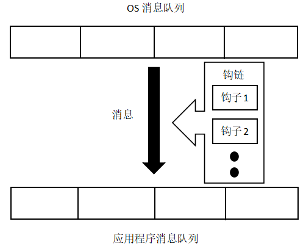
Windows消息钩取的实现——SetWindowsHookEx()
在Windows编程中，使用SetWindowsHookEx() API可以简便地实现消息钩子，其用于将指定的钩子注册到钩链中，无论在DLL内部或外部都可调用.
SetWindowsHookEx() API定义如下：1
2
3
4
5
6HHOOK SetWindowsHookEx(
int idHook, //hook type
HOOKPROC lpfn, //hook procedure
HINSTANCE hMod, //hook procedure所属的DLL句柄
DWORD dwThreadId //将要挂钩的目标线程ID
);
HHOOK：返回值，钩子句柄，需要保留，等不使用钩子时通过UnhookWindowsHookEx函数卸载钩子。
idHook：钩子的拦截消息类型，选择钩子程序的拦截范围，具体值参考文章结尾的消息类型。
Lpfn：消息的回调函数地址，一般是填函数名。
hMod：钩子函数所在的实例的句柄。对于线程钩子，该参数为NULL；对于系统钩子，该参数为钩子函数所在的DLL句柄。在dll中可通过AfxInitExtensionModule(MousehookDLL, hInstance)获得DLL句柄。
dwThreadId：钩子所监视的线程的线程号，可通过GetCurrentThreadId()获得线程号。对于全局钩子，该参数为NULL(或0)。
调试Windows消息钩取
1、调试HookMain.exe：
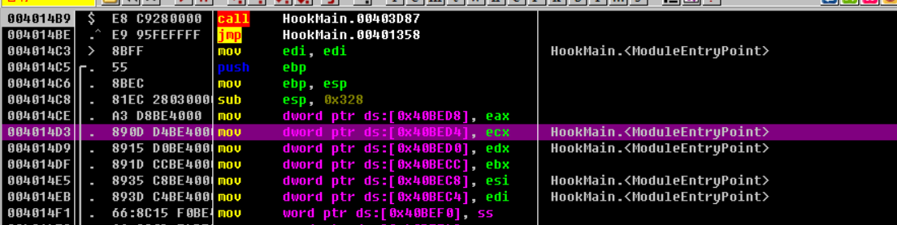
直接拉到401000处可以看到：
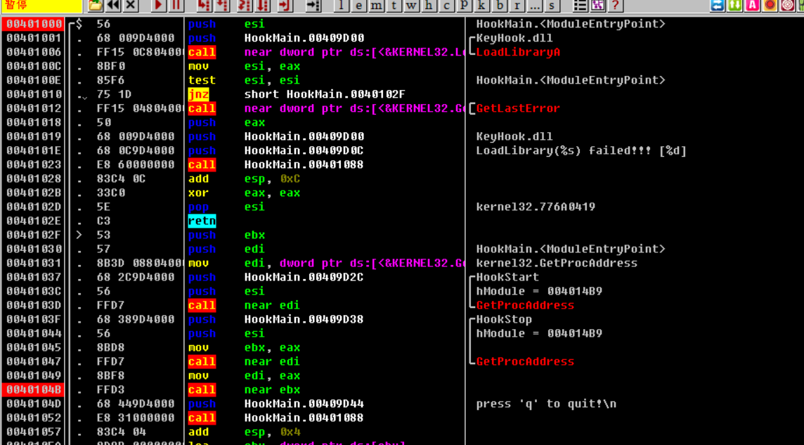
程序先在401006地址处调用LoadLibraryA(KeyHook.dll)，然后在40104B地址处的CALLEBX指令调用KeyHook.HookStart()函数。跟踪进入该函数查看：
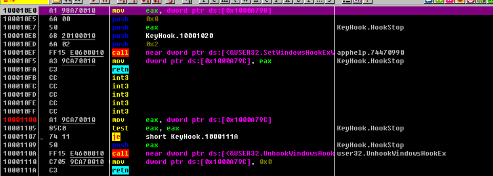
在100010EF地址处可以看到，调用了SetWindowsHookExW()函数，其上方两条PUSH指令将该函数的第一、第二两个参数压入栈。其中第一个参数idHook值为2，即WH_KEYBOARD，第二个参数lpfn值为74C21020，该值即为钩子过程的地址。
返回main()函数之后的代码即为接收用户输入的q后即终止钩取
2.调试Notepad.exe：
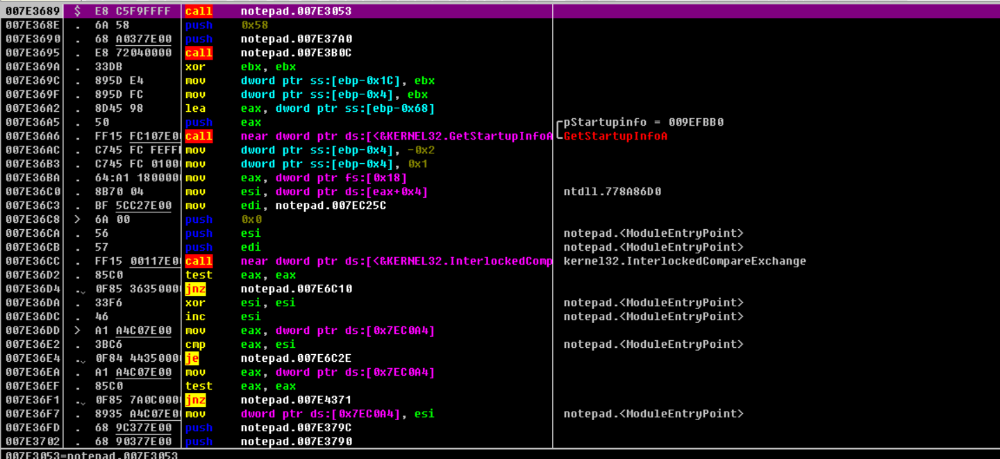
在调试界面里的事件选择：
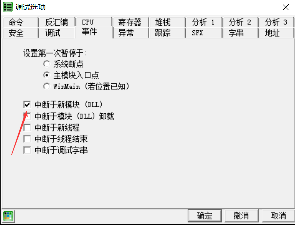
开启后 每当新的DLL被调试时就会自动暂停调试 在从DLL注入调试时开始调试的情况下很有用
运行后发现：
双击HOOK到达HOOK的EP地址处 给此处设置断点 发现每次发生键盘输入事件时 程序就会停在此处
#Dll注入
用CreateRemoteThread实现DLL注入
（一）myhack.dll，即要注入的dll程序
程序流程：
（1）当DLL被加载（DLL_PROCESS_ATTACH）时，先输出一个调试字符串，
（2）利用CreateThread() 创建一个线程，创建后立即被激活，直接调用ThreadProc函数
（3）该函数调用URLDownloadToFile() 下载指定网站的index.html文件
首先将InjectDll.exe和myhack.DLl放入一个文件夹
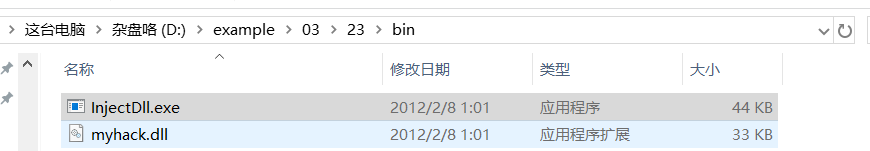
运行notepad.exe 看到PID是6340
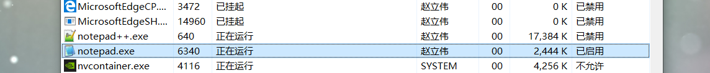
myhack.dll注入
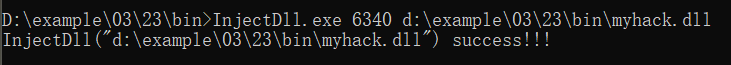
结果确认
发现文件夹里多了文件 打开看看
虽然看起来与实际主页可能不同 但确实是从该网站下载的index.html文件
上述借助创建远程线程的方法可以成功渗透指定进程 进而可以随意操作
（二）InjectDll.exe，即将myhack.dll注入notepad.exe的程序
程序流程：
（1）首先进行提权，如果不提权，OpenProcess()会报GetlastError[5]的错误，同时拿不到句柄。这是因为在xp环境下，虽然账号是管理员，但是权限默认没有启动。
（2）利用OpenProcess() 获得目标进程的句柄。这里指notepad.exe
（3）用VirtualAllocEx() 在目标进程空间分配一定的内存空间。用来写入DLL的路径
（4）用WriteProcessMemory() 将DLL路径字符串写入刚分配的内存。
（5）利用GetModuleHandle() 和GetProcessAddress() 得到LoadLibrary() 的地址。用来加载DLL
（6）利用CreateRemoteThread() 使LoadLibrary()加载DLL，实现DLL的注入。
给进程提权有三种方法：
调试：
打开记事本，OD attach ，运行；
将OD的选项->调试设置->事件->中断在新模块DLL处选中，则程序当加载新的DLL时就会停住；
运行命令行，输入参数，运行InjectDll.exe程序。
将notepad.exe拖入Od 查看其PID 如图：
还是myhack.dll注入
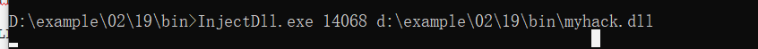
在调试界面里的事件选择：
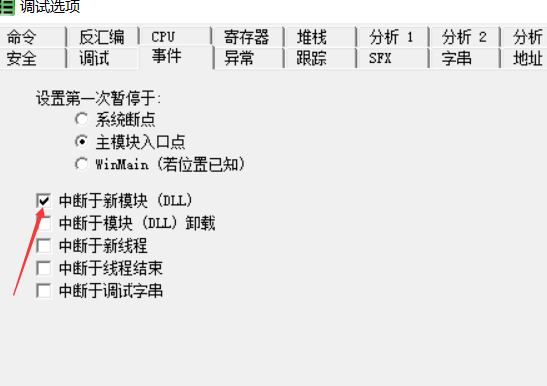
F9运行会发现myhack.dll
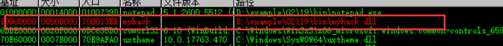
双击来到myhack.dll 入口点附近，下断点，接下来，将OD的中断在新的DLL入口处关闭，运行，就可以调试DLL程序了
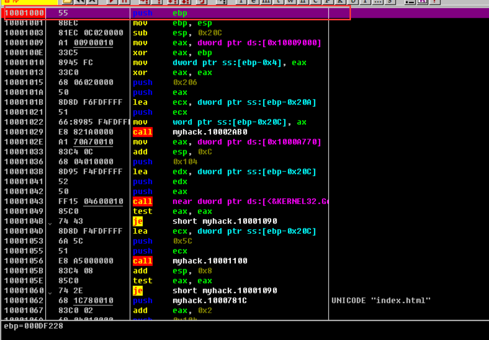
下来F9运行 断在了刚才设置断点的地方 接下来F8单步运行 运行到这里发现myhack.dll字符串：
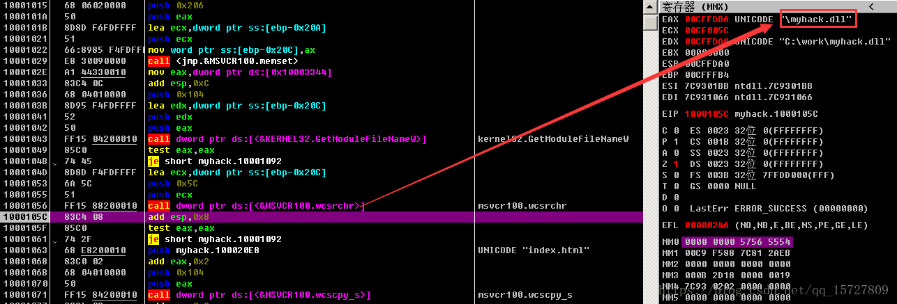
继续运行发现到了这里：
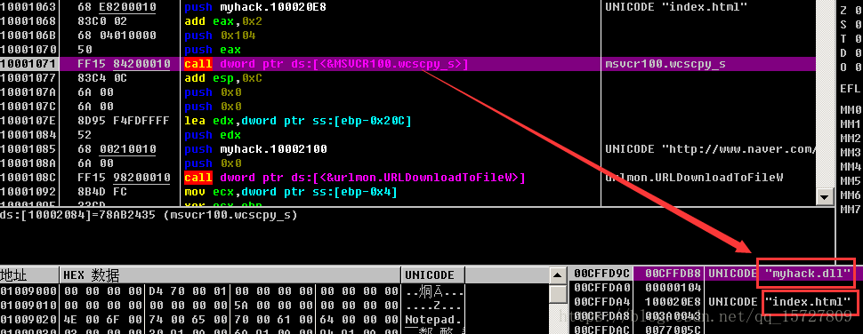
执行完后，说明这个函数实现了拷贝，但是……为啥要拷贝？
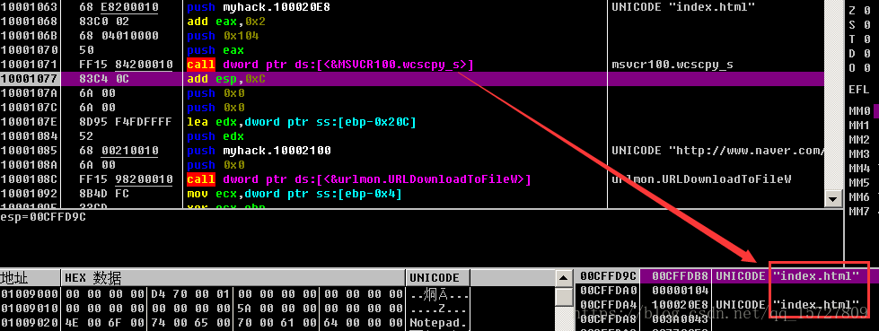
最后调用URLDownloadToFile() 函数实现下载。观察参数明白了，原来拷贝函数是为了得到下载存储的路径的呀！
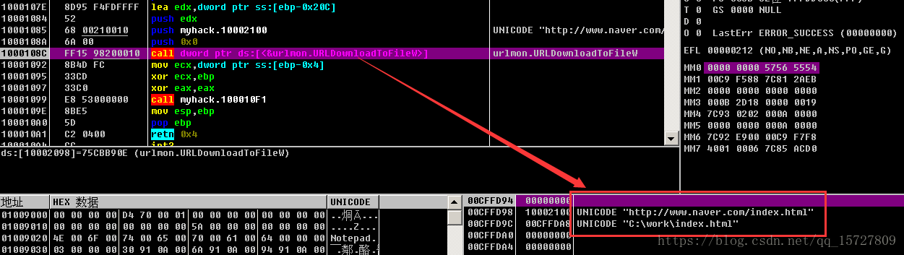
运行程序：发现注入成功了！
使用汇编语言编写注入代码
新的EPI
在反汇编窗口右键，选择此处为新EIP，可以修改EIP指向选中的位置，与直接通过调试方式转到指定地址不一样的是，寄存器和栈中的内容未改变
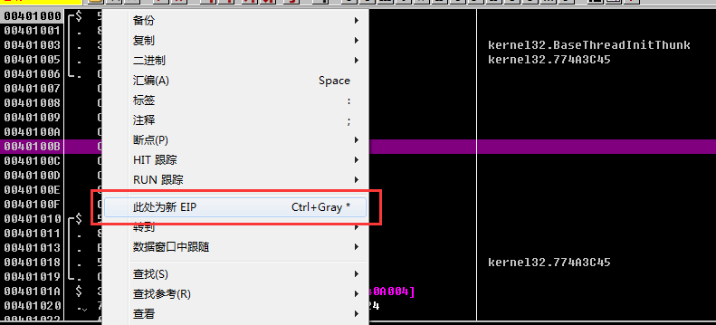
编写ThreadProc函数
1 | PUSH EBP |
这里有些是字符串的代码 由于OD的原因 才会显示成汇编代码
使用push指令将字符串数据压栈
1 | PUSH 41786F |
这段代码还是比较好理解的，实际上是将字符串压到栈上
可以看到运行到call指令前，栈上的情况如下
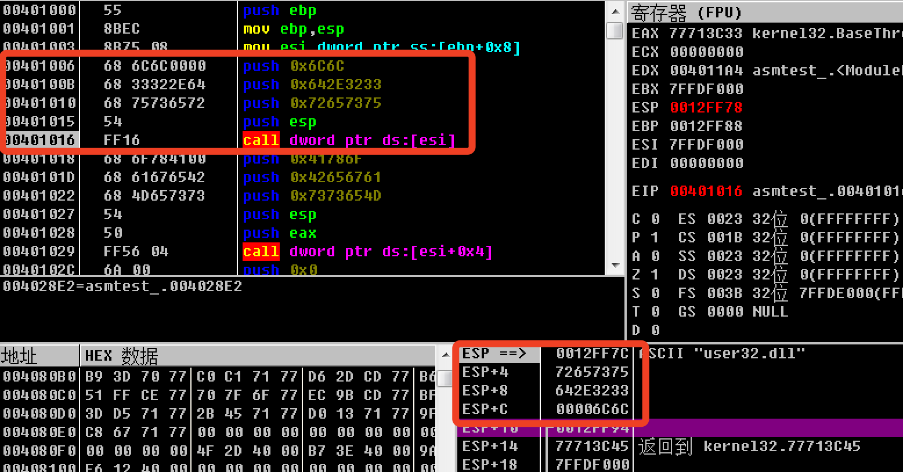
字符串’user32.dll‘即为栈上的\x75\x73\x65\x72\x33\x32\x2e\x64\x6c\x6c
使用call指令将字符串数据压栈
第二种将字符串保存在代码中的方法为使用call指令
call func_address指令的本质为push eip+4，jmp func_address
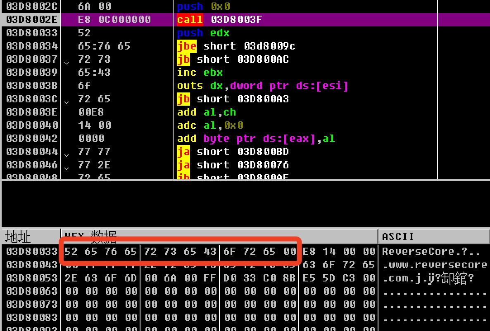
在03d8002e处执行call 03d8003f实际上是执行了push 03d80033, jmp 03d8003f
可以在数据窗口中看出从03d80033到03d8003e存储的内容为ReverseCore的字符串，所以push 03d80033实际上是将字符串的首地址压栈
f7跟进call, 可以看到跳转到的内容如下
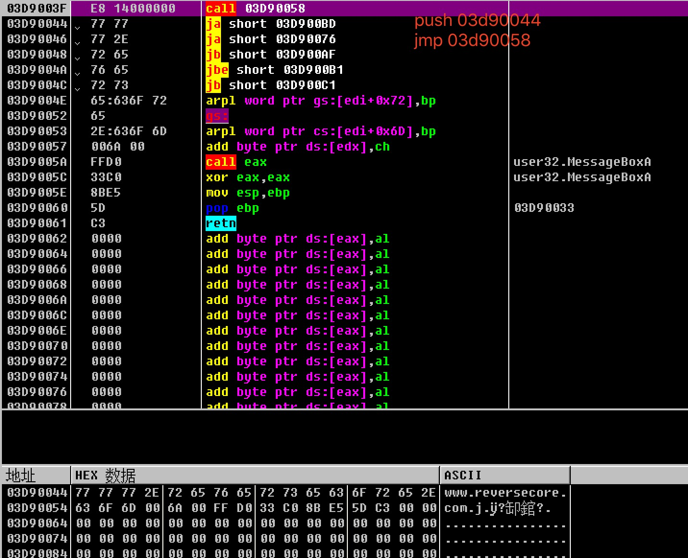
这仍然是一个将字符串压栈的过程，第一行的call指令将首地址为03d90044的字符串“www.reversecore.com”压栈
然后跳转到03d90058
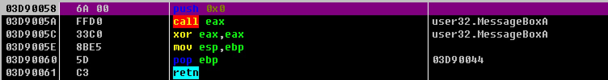
该地址的内容如上图，调用了MessageBoxA函数